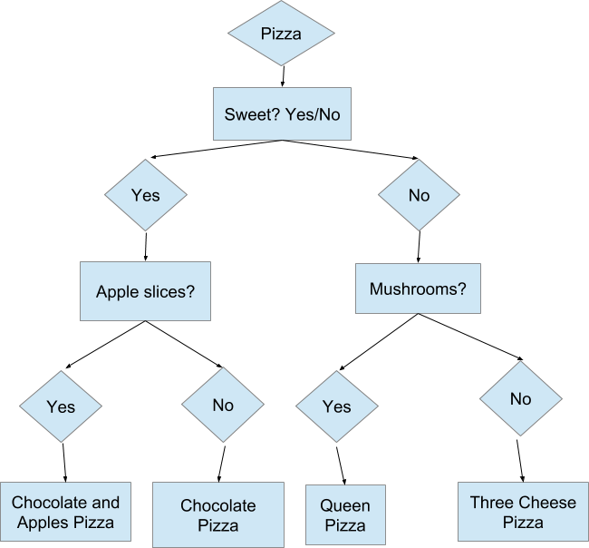
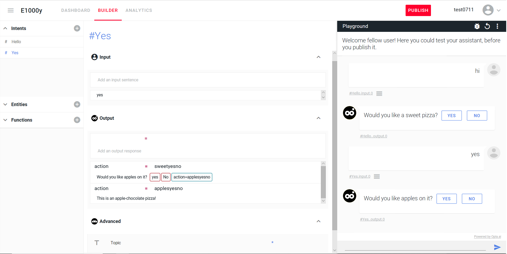
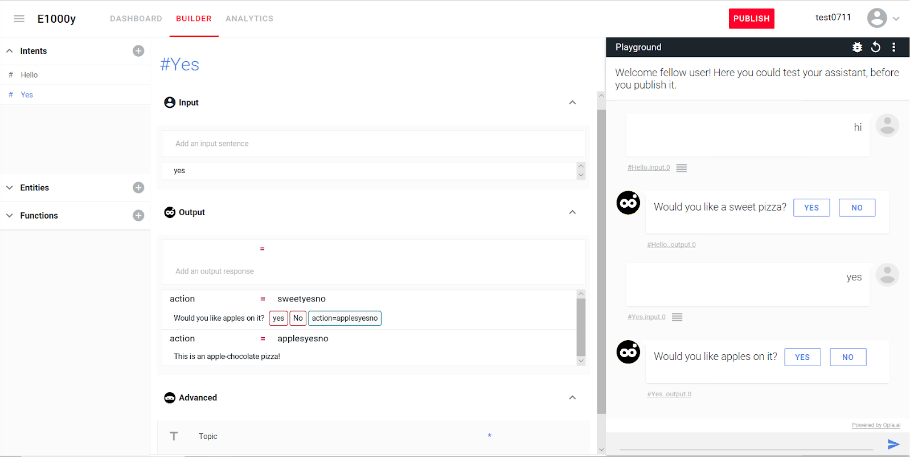
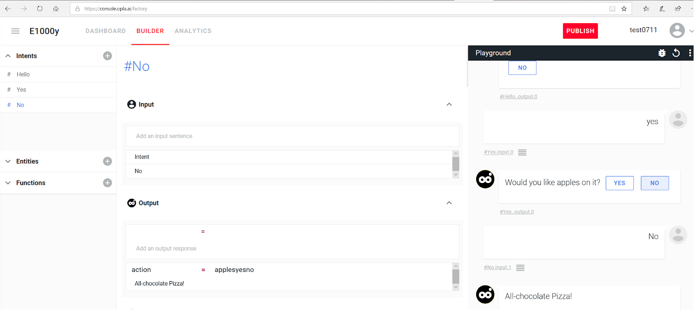
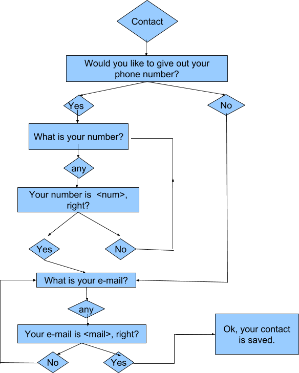
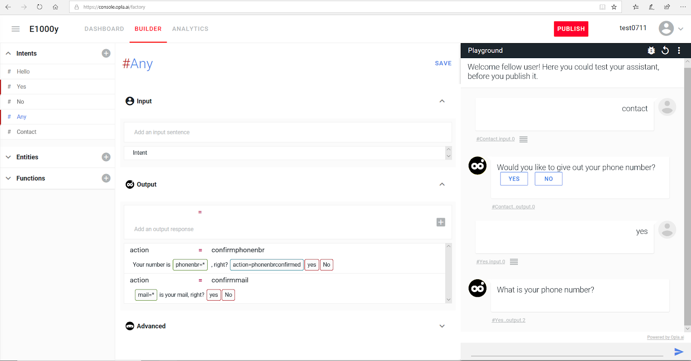
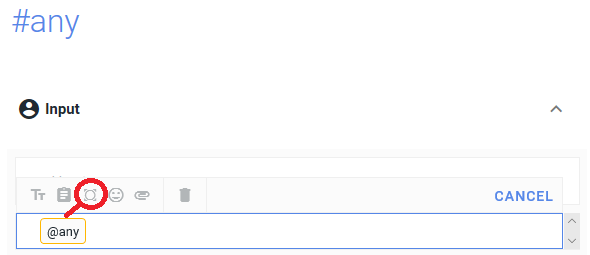
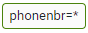

How to
Parameter
Opla Chatbot

Documentation and tricks
Presentation
Opla is an open source chatbot, which whoever can paramater and integrate as they wish. Here are some tips and tricks to learn how to write a conversation. Firstly, if needed, please refer to this link for installation.
The console builder
is as shown :

it is divided into three parts :
- The playground, where the bot is tested
- The intents, which are the keywords used by user or computer to establish the conversation. Intents are preceded by a sharp key.
- Inputs and Outputs, specific to each Intent, which are the responses (Output) that the robot gives to each entered data (Input). It's really in Outputs that 80% of the conversation is set.
In the Outputs lies a menu with clickable items to set the interface up, we are going to explain some of them :


- Insert Variable assignment :
This button will enable getting information from user and stocking it for further display

- Insert code :
the syntax of the action code to be entered will be <action=name of action>

- Button :
Creates a button that will be clickable by the user and which will allow to standardize the inputs. One can create a Yes, No, or any desired input button.

- Trash :
This button is used to remove any of the three buttons above in Outputs, which must be done by first removing the internal text and then clicking the button, then the trash.

- Conditional :
It should also be noted that this menu proposes, when a new intent is opened, a three-pointed star called a conditional. This star is proposed as long as the Outputs do not contain unconditionnal outputs. Preexisting non-conditional outputs (like default "I don't understand") should then ball be erased using the minus on the line.

Note that the interface is not sensitive to the case of the inputs. When an intent is modified, a SAVE button appears on top of the page, intent section, next to the Playground which must be clicked in order to save the progress.

Documentation conventions
We will document the exchanges in the following way : the buttons will be written in square brackets and the lines of code and the variables between chevrons. However, do not confuse line of code (which is displayed in blue in the editor) and variable (which is displayed in green), otherwise the settings will not work. Reminders of settings will be made in parentheses, to keep the logical structure of the explanation, but will not be repeated in the bot.
#Hello
Input : Hello, hi
Output : Would you like a sweet pizza? [yes] [no] <action=sweetyesno>

The code written between chevrons does not appear in the console, it is used to direct the discussion. The robot identifies the lines of codes equal to the conditional ones and thus follows the thread of the discussion, a little like the ends of a piece of puzzle.
Diagram 1 : Pizzas!
We will set the following path up :

#Hello
Input : Hello, Hi
Output : Would you like a sweet pizza [Yes][No] <action=sweetyesno>
the code 'action=sweetyesno' must be copied in the following conditional to link the intent #Hello to the next #Yes. We will follow the Yes branch to enter the two Outputs contained in the intent #yes on the left branch of the diagram:
#Yes
Input : yes
Output :
action = sweetyesno
Would you like apples on it ?
[Yes][No]<action=applesyesno>

#Yes
Input : yes
Output :
action=applesyesno
this is an apple-chocolate pizza!

Congratulations, you have written your first conversational diagram branch! Now, let's add the No that leads to all-chocolate pizza.
#No
Input : No
Output :
action=applesyesno
all-chocolate pizza !

Then we will add the right branch of the diagram :
#No
Input : no
action = sweetyesno
Would you like mushrooms?
[yes][no]<action=mushroomsyesno>
#Yes
Input : Yes
Output :
action = mushroomsyesno
Let's go for a Queen Pizza
#No
Input : no
Output :
action=mushroomsyesno
Let's go for a Three-Cheese Pizza!
Here we go, the first conversational pattern is created! Let's now follow suit with the "Contact" Diagram, which manages manual inputs done by the user.
Diagram 2 : Contact

One can quite, and this is the case here, create two conversation patterns in the same bot.
Nota : the inputs being the same as the intents, one enters them once in the intents and after they do not change any more. This is the reason why they will not be rewritten in the following examples. The same intent therefore counts several different outputs.
#Contact
Input : contact
Output :
Would you like to give out your phone number?
<action=getphoneyesno> [yes] [no]
Pressing on , we will insert a variable (noted in parentheses). One must write the value of the variable inside the square that results from pressing the insert variable assignment button.
#Yes
Input : yes
Output :
action = getphoneyesno
What is your phone number? (phonenbr=*)
<action=confirmphonenbr>
#Any intents
We will create an intent #Any, of which here below the final result :

The intent #Any
The intent #Any is used to store any value given by the user in a variable accessible with the button and which has for syntax (variable=*), the parentheses indicating that one writes inside the square that appears on the line when the button is pressed.

Click on the icon with 4 corners to display the code @any
#Any
input : (@any)
output :
action = confirmphonenbr
 is your phone number, right?
<action=phonenbrconfirmed>[Yes][No]
#yes
action = phonenbrconfirmed
What is your mail?  <action=confirmmmail>
<action=confirmmmail>
#Any
action = confirmmail
is your mail, right?
<action=mailconfirmed> [yes][no]
#yes
action=mailconfirmed
Ok, your contact is registered
We went through the left branch of the diagram. We will now focus on the right branch
(#contact - already written but as a reminder for reading
Would you like to give out your phone number?
[yes][no]<action=getphoneyesno>
#No
Input : No
Output :
action = getphoneyesno
What is your mail? <action=confirmmail2>
#any
Output :
action=confirmmail2
is your mail, right?
<action= mailconfirmed2>[yes][no]
#yes
action = mailconfirmed2
Ok, your contact is registered.
"No" loops
We will then add two loops for the "No" on the left branch : we can see that the arrow rewinds them up one step upwards : we will then take as a conditional the former code line, which will loop the chatbot over the question.
(
#yes
input = yes
output = … <action=confirmphonenbr>
#any
action=confirmphonenbr
is your phone number, right?
<action = phonenbrconfirmed> [yes][No]
) - only written as a reminder
we then “plug” the “no” between phonenbrconfirmed and confirmphonenbr
#No
phonenbrconfirmed =
What is your phone number?
<action=confirmphonenbr>
Similarly, on mail we will connect the "no" between mailconfirmed and confirmmail
(
#any
action = confirmmail
is your mail, right?
<action=mailconfirmed>[Yes][No]
) - reminder
#No
action= mailconfirmed
What is your mail?
<action=confirmmail>
We are now done setting up diagram 2!
Conclusion
- insert action code lines and conditional connect to set the conversation flow up
- @any in #any, and structure like (var=*) in output is used to store and display variables' values